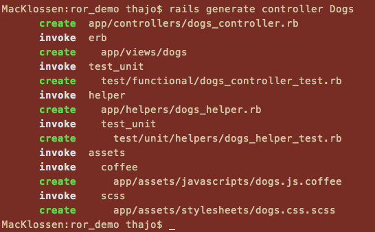
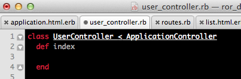
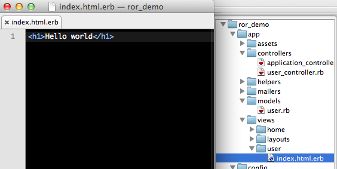
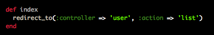

Webbramverk, 1DV450
Linnéuniversitetet
 Denna presentation är licensierat under en
Creative Commons Erkännande 3.0 Unported Licens. (Där inte annat anges)
Denna presentation är licensierat under en
Creative Commons Erkännande 3.0 Unported Licens. (Där inte annat anges)
Denna presentation är licensierat under en
Creative Commons Erkännande 3.0 Unported Licens. (Där inte annat anges)
Apache 2 med Passenger / mod_rails
http://www.modrails.com/
WEBrick - Följer med som default (rails server)
Stödjer mitt webbhotell Ruby on Rails?
config/routes.rb - Stället du definierar hur URL:er mappas mot resurser(controllers)
http://guides.rubyonrails.org/routing.html

# läggs till när du skapar en controller - ger direkt tillgång # controller#action get user#index # request /user/index mappas mot controllern user och dess action index match "user#index", :to => "user#index"
# sköter routning för users enligt REST resources :users
| HTTP Verb | Sökväg | Metod i controllern (action) | Används för |
|---|---|---|---|
| GET | /users | index | Listar upp alla användare |
| GET | /users/new | new | Returenerar ett HTML-formulär |
| POST | /users | create | Försöker skapa i databasen |
| GET | /users/:id | show | Visar en användare |
| GET | /users/:id/edit | edit | Returnerar ett formulär för ändring |
| PUT | /users/:id | update | Updaterar (i db) en användare |
| DELETE | /users/:id | destroy | tar bort en användare |
En bra routing ger också möjlighet att använda så kallade url-helpers
# returns /users users_path #returns /users/new new_user_path #returns /users/:id/edit - (edit_user_path(10) returns /users/10/edit) edit_user_path(:id) #returns /users/:id - (user_path(10) returns /users/10) user_path(:id)
# ex. user/show/1.json match ':controller(/:action(/:id(.:format)))'

# Talar om att /exit ska matchas mot user-controllern och dess exit-action # URL helpers heter "logout_path" som returnerar /exit match "exit", :to => "user#exit", :as => "logout"
# rootkatalogen (/) ska matchas mot en controller/action root :to => "user#index"
# /projects/:id/users/:id # Nästla ej fler gånger resources :projects do resources :users end
Kontrollerns viktigaste uppgifter:
Sköta omdirigering (t.ex. vid inloggning)
Hämta data från modellen (t.ex. User.find(1) )
Rendera en vy (bestämma vilket dataformat)

- En kontroller-klass
- En helper-klass
- En vy-mapp
- plus lite annat
Låt säga webbläsaren anropar:
http://localhost:3000/user/index
I filen app/controller/user_controller.rb hittas metoden/action index


En tom action/metod letar alltid efter en template med samma namn
# i app/controller/user_controller.rb
def index
# Kommer leta efter template views/user/other_view.html.erb
render('user/other_view')
# Kan i detta fall utesluta 'user' i sökvägen då vi är user_controller
end
# Laddar in en template från en annan controller
def index
render('home/test')
end
I user_controller.rb

OBS!
Ett HTTP ska skapas med statuskod "302 Found" och "location" satt till den nya URL:en (user/list)
Browsern/klienten frågar sedan om den nya resursen
All eventuell data framtagen i controllern förloras
- till skillnad från om man kör render() som går direkt till efterfrågad template
ERb
Embedded ruby file - Template language
Hittas under app/views/
# i en erb-fil
<% value = 10 %>
<%= "The value is #{value.to_s}" %>
# i en erb-fil <% 3.times do %> HTML goes here<br /> <% end %>
Controllern kommer anropa modellen (DB) för att hämta data som vi vill presentera i vyn/template.
Data sparas i en instansvariabel som template (ERb) kommer åt.


<%= link_to("Användarnas startsida", {:controller => "user", :action => "index"}) %>
Tänk också på att man kan använda de URL path som ramverket skapat åt oss (beroende på route.rb)
# new_user_path kommer ersättas med sökvägen till controller = "user" och action = "new"
<%= link_to("Skapa användare", new_user_path ) %>
/users?page=5&limit=100
# GET- och POST-variabler ligger i arrayen params # i user_controller.rb - Ta hand om dem i controllern och tilldela instansvariabler @page = params[:page]
# kan sättas i ERb - OBS :id är reserverat
<%= link_to("länktext", { :action => "list", :page => 5, :limit => 100, :id => 1}) %>
# ger länken user/list/1?page=5&limit=100

Vi vill ju såklart kunna skapa, läsa, ändra och ta bort data!
Naturligtvis kan vi använda Active Record Querys för att prata med modellen
Uppgiften blir för kontrollern att avgöra vad som ska göras. Hämta data? Bara presentera vy? Göra en redirect?